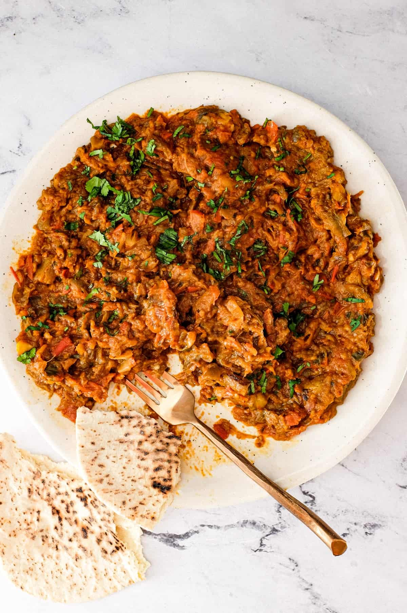

Zaalouk

How to make the most declicious Zaalouk
This is my favorite eggplant recipe. It's easy to make and tastes amazing. Great with flatbread and/or rice on the side, as well as yoghurt to lessen the spice.
Ingredients
- 1kg or a little over 2 lbs of eggplant
- 2-3 garlic cloves, crushed
- 1½ teaspoons sweet paprika
- 1½ teaspoons cumin
- ¼ teaspoon (or more) red pepper flakes
- 2 cups peeled and chopped tomatoes or 2 cups basic tomato sauce
- ½ cup water
- 1 teaspoon sea salt
- black pepper, to taste
- bay leaf
- teaspoon lemon juice
Steps
- Peel the eggplant and slice lengthwise into ¼ inch thick slices. Drizzle a large parchment-lined baking sheet with a generous Tablespoon of olive oil and arrange the slices evenly. Depending on the size of your sheet, you may need another one to accommodate the eggplant. Drizzle another generous Tablespoon of olive oil over the slices, sprinkle with a pinch of salt, and roast in a 450°F oven. Roast until the slices are cooked and browned, around 35 minutes. (This follows a method similar to the one used in my recipe for Eggplant Fatteh, so check it out if you want to see a picture of what the eggplant slices will look like when cooked.) Once they are golden brown, remove from the oven and let cool for a few minutes on the counter.
- In a large sauté pan over medium-high heat, add 1 Tablespoon of olive oil and the garlic and cook for around 30 seconds. Add the paprika, cumin, and hot pepper flakes and bloom the spices in the hot oil for 10 seconds before quickly adding the chopped tomatoes, water, salt, black pepper, and bay leaf. Let the sauce simmer for 5 minutes.
- Now chop the cooked eggplant slices into bite-sized pieces. Add them to the sauté pan, stirring to combine. Reduce the heat to medium-low, cover, and let it simmer for another 5 minutes.
- The eggplant should now be fully cooked and tender but shouldn't have disintegrated. Remove from the heat and stir in the lemon juice and the chopped cilantro. Give it a taste for seasoning and adjust accordingly. Serve hot, warm, or room temperature with a drizzle of olive oil and a squeeze of lemon.
Repurposed from
Lands and Flavour